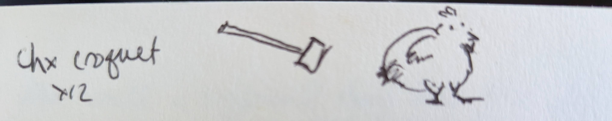

Chicken Croquettes

Description
Fried chicken dumplings.
Vintage oldie but goodie - you can use fresh chicken here, but this recipe is also useful for using up cooked chicken!
Makes 12 croquettes
Ingredients
Main recipe
- 1 lb boneless skinless chicken breast
-
- 1/4 tsp salt
- 1/8 tsp each black pepper and thyme
- 1/4 c butter (1/2 stick)
- 1/4 onion, chopped fine
- 1/4 tsp salt
- 1/4 tsp black pepper
- 1/4 tsp thyme
- 1/8 tsp cayenne pepper
- 1/4 tsp msg
- 1 clove minced garlic
- 1/2 c flour
- 1/2 c milk
- 1/2 c chicken broth
- parsley
- Peanut or canola oil for frying
- Additional 1/2 c flour
- 1 egg
- 1/4 c hot sauce
- 1 - 2 c panko breadcrumbs
Gravy
- 3 TB butter
- 3 TB flour
- 1/4 tsp thyme
- 2 c chicken broth
- salt and pepper to taste
Steps
- Preheat oven to 400°F
- Coat chicken breasts lightly in oil and season w/ thyme and black pepper.
- Bake for 30 mins or until done. Let cool and chop very fine.
- Heat milk and broth over low heat.
- Add to large skillet the 1/4 c butter and the vegetables and seasoning. Saute until soft, about 7 minutes.
- Add flour and cook another 2 - 3 minutes. Whisk in milk and cook until thick. Let cool.
- Add the cooled mixture to the chopped chicken and mix well.
- Mix together the breading (the 1/2 c flour, 1 egg, hot sauce and panko). Form the chicken mixture into 2 oz balls until you have about 12.
- Roll the balls in the breading & set aside to rest until the oil is heated up.
- In a large, heavy pot, heat frying oil to 325°F.
- Fry six balls at a time for 4 to 5 minutes until they are solid medium brown and crispy. Drain on a rack
- Make the gravy: melt butter and add flour & seasoning. Stir constantly until the flour begins to brown.
- Whisk in the broth and cook until bubbling and thickened.